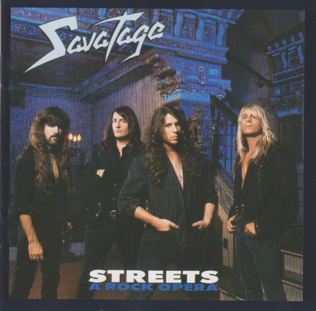

My favourite movie(s) is the hobbit trilogy.
 and they dont have a website aswell because why would a film have one anyway.
and they dont have a website aswell because why would a film have one anyway.
I play in the second team of FC Michelbeke. I just joined them this season so I'm pretty new there.
Here's the Facebook website of out team:
VoetbalclubStandaardMichelbeke
Besides Football I also play some instruments such as the electric guitar. I play the electic guitar at the music
acadamy of Ronse.
I was so passionate about it that I even considered to do it as a job.
Here's a link to the website of the academy: kunstacademievlaanderen.be
And lastly I also go to the gym but not as much as I used to. I go to the basic fit and here's the link to their website:
basic-fit.com
My favourite genre is metal and my favourite band is Savatage. here's a picture of the band memebers:  they don't have a website.
My favourite movie(s) is the hobbit trilogy. and they dont have a website aswell because why would a film have one anyway.